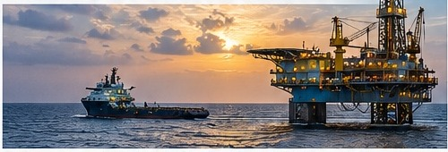

ECONOMIE
Suriname start nieuwe fase in olie- en gasontwikkeling
Meer zekerheid, meer kansen voor de economie

De ontwikkeling van de olie- en gassector kan grote invloed hebben op overheidsinkomsten, werkgelegenheid en lokale bedrijvigheid.
Lees het volledige artikel →